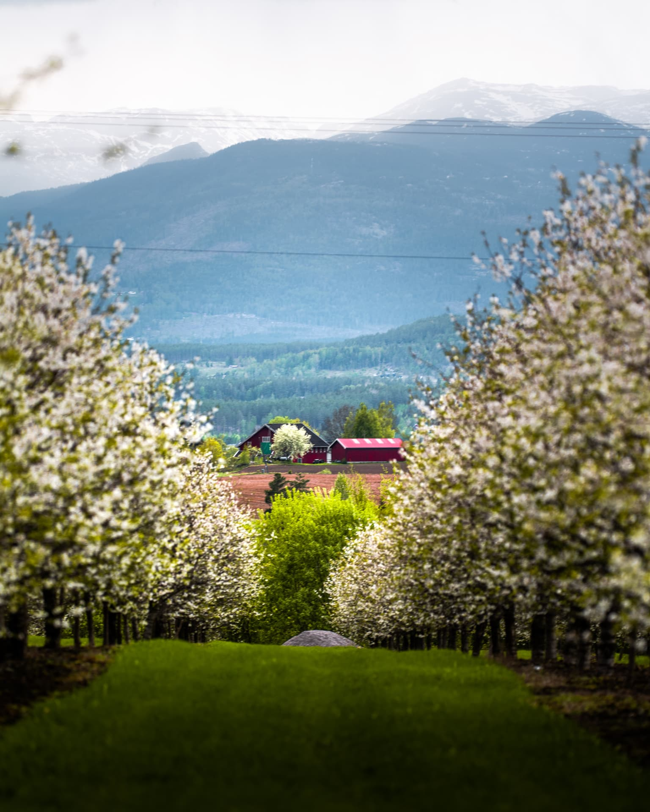
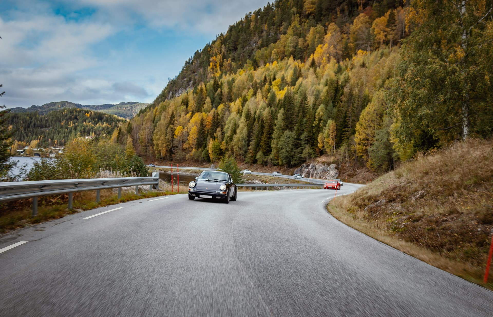
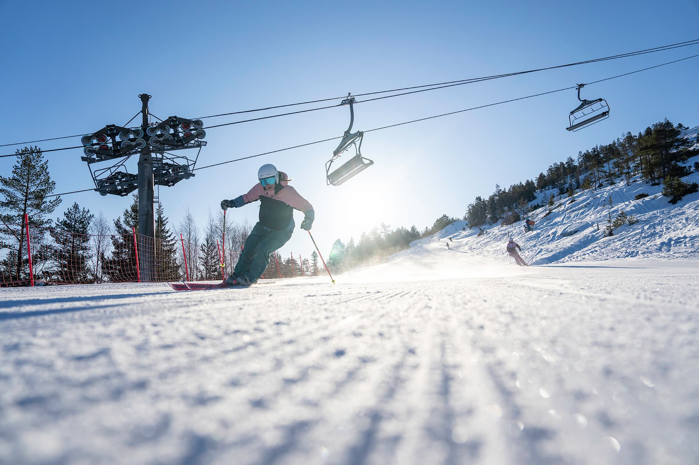
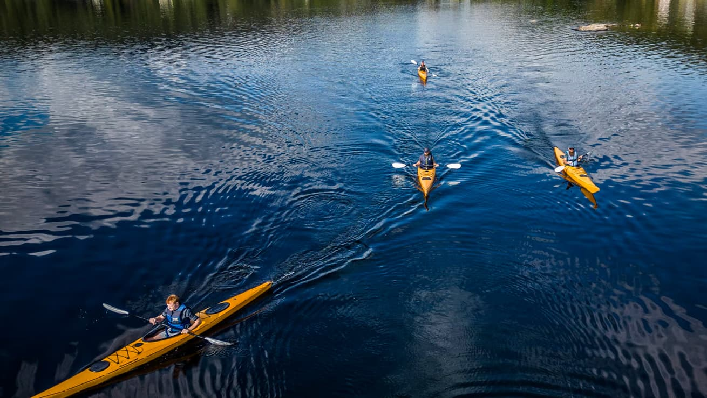
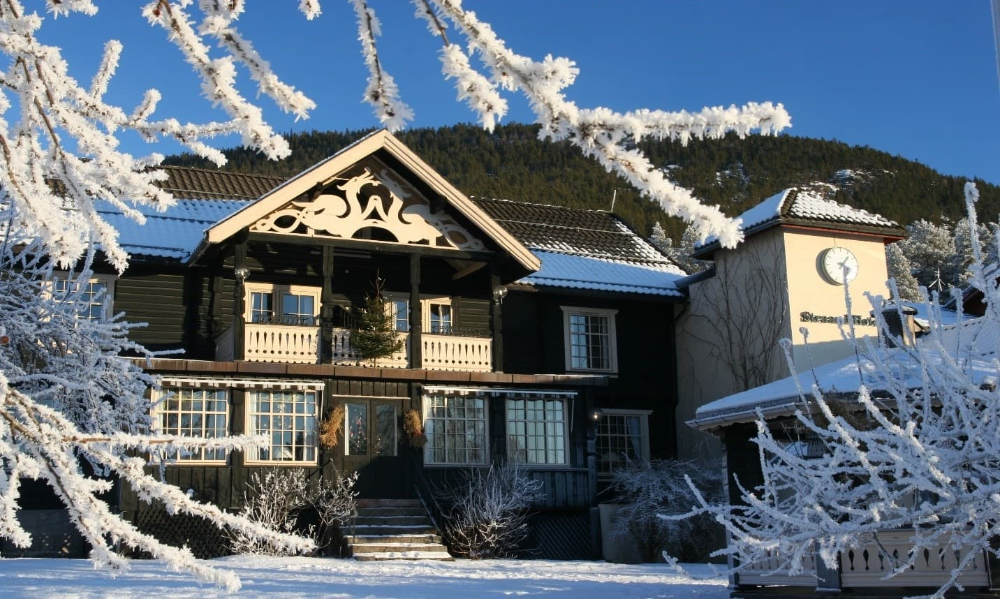

Planlegg reisen til Vrådal
Alt du trenger å vite før du drar – hvordan du kommer hit, hvor alt ligger, og hva som venter deg i hver årstid.
Midt i Vest-Telemark
Vrådal ligger i Kviteseid kommune, mellom innsjøene Nisser og Vråvatn. Bygda er lett å nå med bil fra både Østlandet og Sørlandet – og selve kjøreturen gjennom Telemark er en opplevelse i seg selv.
Med bil
- Oslo – Vrådal: ca. 3 timer
- Skien – Vrådal: ca. 1 t 45 min
- Kristiansand – Vrådal: ca. 2,5 timer
Med fly
Nærmeste flyplasser er Sandefjord lufthavn Torp og Kristiansand lufthavn Kjevik. Herfra kan du leie bil eller reise videre med buss.
Med buss og tog
Finn beste kollektivforbindelse til Vrådal i reiseplanleggeren hos Entur.
Gå til entur.noReisetidene er omtrentlige og avhenger av vær og føre.
Finn fram i Vrådal
Her finner du Vrådal sentrum, Straand Hotel ved Nisser, Vrådal Panorama og golfbanen på Fossøy.
Interaktivt kart med løyper, stier og HUB-ruter kommer.
Godt å vite
Skibuss
Gratis skibuss går hver dag mellom Straand Hotel og Vrådal Panorama i vintersesongen.
Utleie
- Ski, snowboard, akebrett og pulk ved Vrådal Panorama
- Sykkel og el-sykkel
- Kajakk, kano, SUP og pedalbåt
- Privat badstue på fjelltoppen
På Straand Hotel
- Innsjekk fra kl. 15 (kl. 16 i juni–september), utsjekk kl. 11
- Svømmehall kl. 07–19
- Lunsj i pianobaren kl. 12–18
- Telefon 35 06 90 00
Familie
Lekerom, barnekino, brettspill og lekebokser til utlån på hotellet. Skjermede barneområder og skiskole i bakken.
Motorsyklister
Straand er et «Bikers Welcome»-hotell med vaskeplass, tørkefasiliteter og ferdige GPS-ruter på hubriding.no.
Bærekraft
Lokale råvarer i sentrum, kortreist mat og opplevelser som tar vare på naturen vi lever av.
Vrådal gjennom året
Alle årstider har sin egen sjarm. Velg en årstid for å se nettstedet i sesongens farger og forslag.

Vinter
Alpint i Vrådal Panorama, 40+ km langrennsløyper, stjernekikking, julebord, jul og nyttår.
Vår
Golfbanen åpner, MC-vårslipp 1. mai, sykkelhelg og blomstrende frukttrær langs vannet.

Sommer
Badestrand og strandbar, padling, toppturer, slusecruise og Tretoppvegen.
Høst
Fjellturer i fargeskiftet, motortreff, bilfinale og utebad.

En liten bygd med store opplevelser
Vrådal er en idyllisk bygd i Kviteseid i Vest-Telemark, omkranset av fjell, trolske skoger og de klare innsjøene Nisser og Vråvatn. Her har reisende fått husly siden 1864, da Straand startet som skysstasjon – i dag drevet av femte generasjon av samme familie.
Bare noen stavtak unna ligger Morgedal, skisportens vugge. Og opp gjennom årene har kunstnere og eventyrfortellere funnet inspirasjon i landskapet – ta gjerne en gallerirunde for å oppleve kunsten med tilknytning til bygda.
Se alle opplevelser